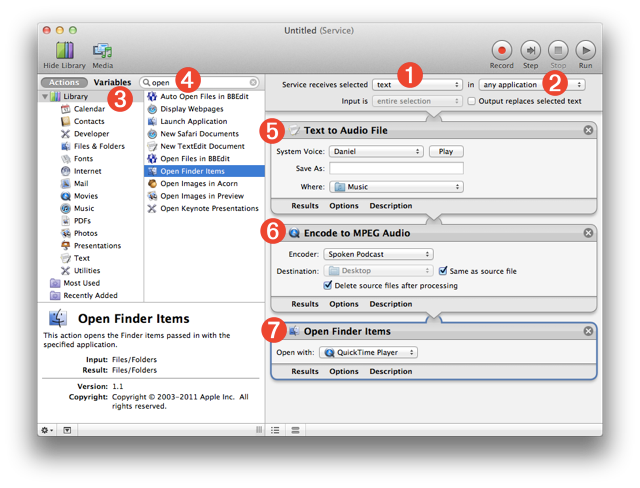
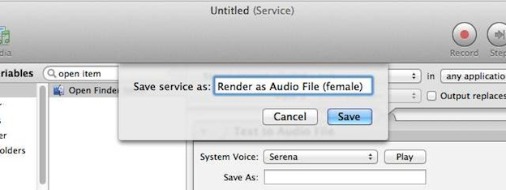

Once you have listened to and approved a text selection spoken using one of the installed voices, you’ll want to render the selected text to an audio file and add the file to the GarageBand project. To enable this process, we’ll create two Automator services for rendering text to an audio file; one for the male voice, and one for the female voice.
DO THIS ►Close any open Automator documents and create a new document by choosing “New” from Automator’s “File” menu. As with the previous workflows, choose the Service template option as the template for the new workflow document.
In the new document, leave the service input controls set to the default values, thereby enabling the service to recieve selected text 1 in any application 2 as the service input data.
Next, we’ll add Automator actions, from the actions library to the workflow, that will perform these steps in our “Automation recipe”:
- Render the selected text, that gets passed as input to the service, into an audio file on disk.
- Encode the newly created high-quality file to MPEG format, and then…
- Open the new encoded file in the QuickTime Player application for review and placement into the GarageBand project.
DO THIS ►Select the main library in the library list on the left side of the window 3 and then search the action library for an action for converting text to audio by entering “text to audio” in the search field 4 . The “Text to Audio File” action will appear below the search field in the actions list. Drag the action from the list into the workflow area to add its action view to the workflow 5 .
Now that the action for rendering the text, passed to the service as input, has been placed in the workflow, we can set the action’s parameters by changing the values of the controls displayed in its action view 5 .
DO THIS ►In the action view 5 , set the voice for the “System Voice” popup menu to be the male voice you installed. Set the name of the created audio file to default by leaving the “Save As” text field empty. And set the destination for the created file to be the “Music” folder by selecting it from the “Where” popup menu in the action view.

The audio file created by the “Text to Audio” action will be in AIFF format, which has no compression and typically generates larger file sizes. To reduce the file size of the created audio clips while still providing a quality sound, the created clips need to be encoded from AIFF format to MPEG format. This conversion will be accomplished with a second Automator action.
DO THIS ►Enter the term “encode” in the Automator search field 4 . The “Encode to MPEG Audio” will appear in the actions list below the search field. Drag the action from the list into the workflow area after the previously added action. Release the mouse, and the action view will be displayed 6 .
Now that the action for encoding the audio file, passed from the previous action, has been placed in the workflow, we can set the action’s parameters by changing the values of the controls displayed in its action view 6 .
DO THIS ►In the action view 6 , set the value of the “Encoder” popup menu to “Spoken Podcast”. Next, select the checkbox labeled “Same as source file” to have the newly encoded file placed in the same folder as the original file. And finally, select the checkbox labeled “Delete source files after processing” to have the action delete the original larger audio file once it has been encoded to a new smaller MPEG file.
The last step in the “Automation recipe” is to open the encoded file in the QuickTime Player application so that it can be reviewed for accuracy, and then placed into the GarageBand project. This can be accomplished by adding one more action to the workflow.
DO THIS ►Enter the term “open item” in the Automator search field 4 . The “Open Finder Items” will appear in the actions list below the search field. Drag the action from the list into the workflow area after the previously added action. Release the mouse, and the action view will be displayed 7 . In the popup menu in the action view, choose the “QuickTime Player” as the application that will open the encoded audio file passed to this action from the previous action.
Now the service workflow is complete and is ready to save and install into the system.
DO THIS ►Choose “Save” from the Automator “File” menu, and in the forthcoming naming sheet (see below) name the new service: Render as Audio File (male). Click the “Save” button to complete the creation and installation process.
Create a Version using the Female Voice
Now that the service for rendering selected text to audio file using a male voice is created, let’s create one using the female voice. This can easily be accomplished by duplicating the existing service workflow and changing the selected voice in the “Speak Text” action to the female voice you installed.
DO THIS ►From the Automator “File” menu, select the menu option titled: Duplicate
A copy of the existing service workflow will be created and displayed, ready for editing.

DO THIS ►In the duplicate workflow, change the voice on the popup menu in the “Text to Audio File” action to be the high-quality female voice you installed. Choose “Save” from the “File” menu and in the forthcoming naming sheet, change the workflow service name to Render as Audio File (female). Finally, click the “Save” button in the naming sheet to complete the creation and installation of the new service.
Cool New Tools
Congratualtions! You have now created and installed two services for rendering text selected in any application to encoded audio files. Next, we’ll assign keyboard shortcuts to the newly created services to make them easy to execute.